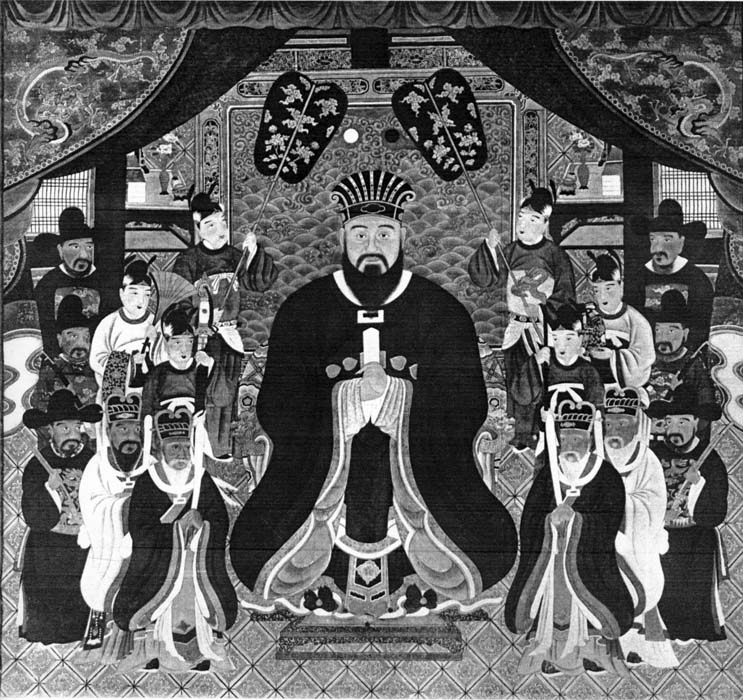

About Okinawa
History
Before Becoming a Part of Japan
The Ryukyu Kingdom was a kingdom in the Ryukyu Islands from 1429 to 1879. It was ruled as a tributary state of imperial Ming China by the Ryukyuan monarchy, who unified Okinawa Island to end the Sanzan period.
The Ryukyu Kingdom played a central role in the maritime trade networks of medieval East Asia and Southeast Asia despite its small size.
The Ryukyu Kingdom became a vassal state of the Satsuma Domain of Japan after the invasion of Ryukyu in 1609 but retained independence until it was transformed into the Ryukyu Domain by the Empire of Japan in 1872.
Ryukyu become Okinawa Prefecture of Japan in 1879. In 1912, Okinawans first obtained the right to vote for representatives to the National Diet which had been established in 1890.
1945 - 1972
Okinawa was occupied by the United States during the Allied occupation of Japan after World War II and was governed by the Military Government of the Ryukyu Islands from 1945 to 1950 and Civil Administration of the Ryukyu Islands from 1950 until the prefecture was returned to Japan in 1972.
Language and Culture
Having been a separate nation until 1879, Okinawan language and culture differ in many ways from those of mainland Japan.
Language
There remain six Ryukyuan Languages which, although related, are incomprehensible to speakers of Japanese. These languages are in decline as the younger generation of Okinawans uses Standard Japanese. However, the traditional Okinawan language is still used in traditional cultural activities, such as folk music and folk dance.
Religion
Okinawans have traditionally followed Ryukyuan religious beliefs, generally characterized by ancestor worship and the respecting of relationships between the living, the dead, and the gods and sprits of the natural world.
Culture
Okinawan culture bears traces of its various trading partners. One can find Chinese, Thai, and Austronesian influences on the island's customs. Okinawa's most famous cultural export is karate, a product of the close ties with and influence of China on Okinawan culture.